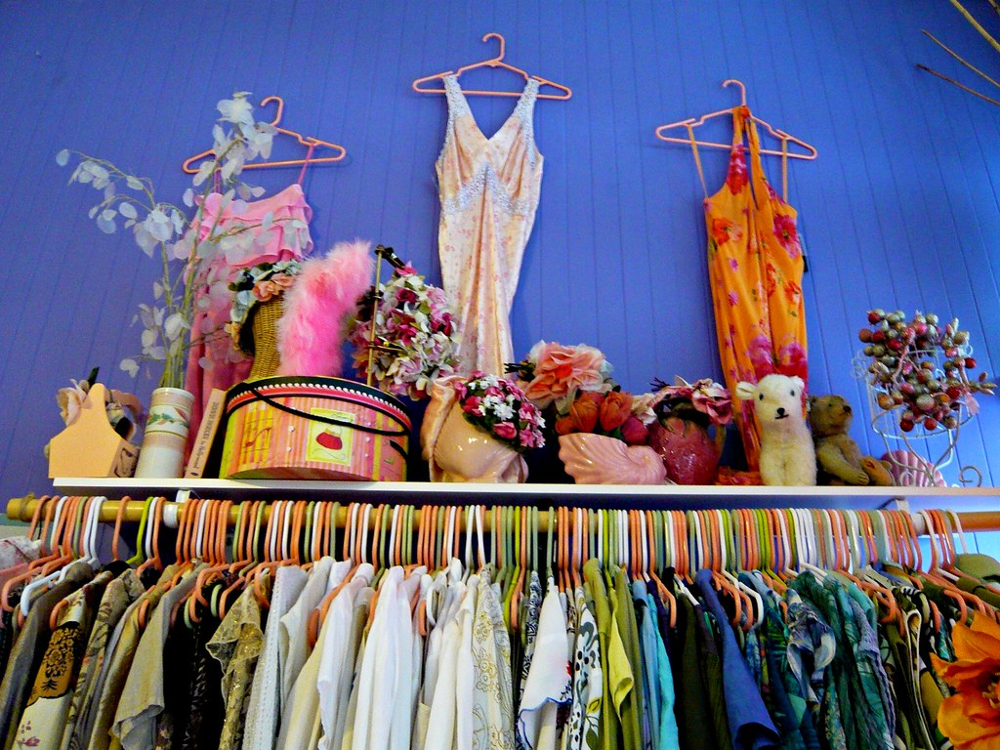
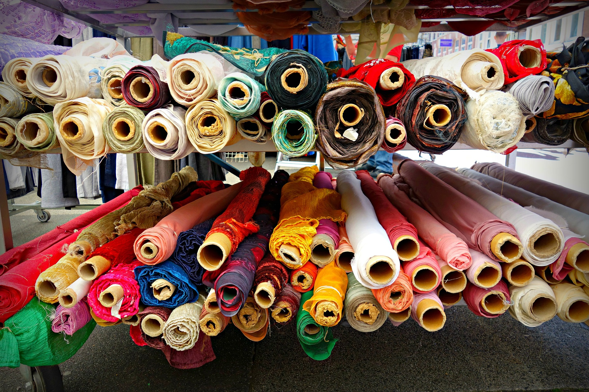
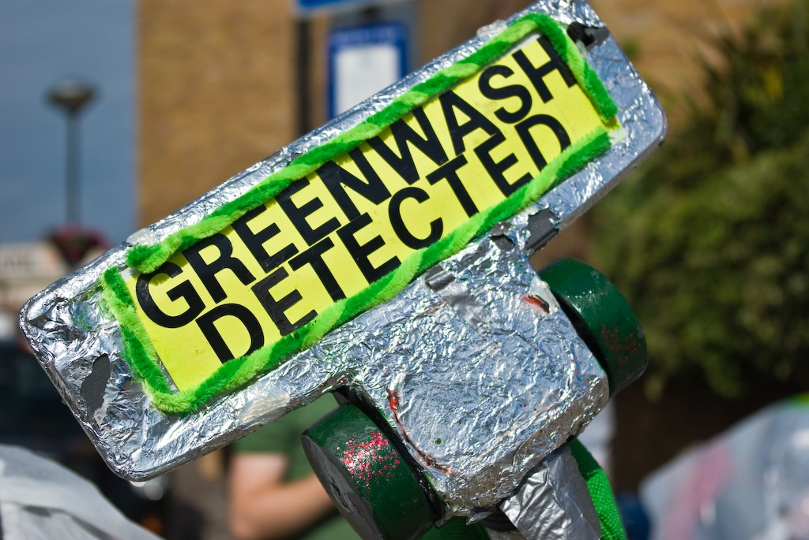

Discover the steps to building an eco-conscious wardrobe while making a positive impact on the environment. Learn how to apply each tip to your fashion choices and redefine your style with sustainability in mind.



Here are some steps you can take:
1. Buy Less and Buy Better
•Ask yourself if you truly need it and if you'll wear it at least 30 times.
Fashion Revolution - 30 Wears
2. Invest in Sustainable Fashion Brands
•Research and discover fashion brands that promote sustainability.
Martha Stewart - Shop Sustainable Fashion
3. Shop Secondhand and Vintage
•Explore local thrift stores, online vintage marketplaces, and secondhand shops.
EcoWatch - Secondhand Fashion
4. Try Renting
•Reduce one-time clothing purchases and environmental impact by renting outfits for special occasions or trying clothing rental services for everyday wear.
Green Matters - Rental Fashion
5. Avoid Greenwashing
•Scrutinize brands claiming to be sustainable. Look beyond buzzwords and check for detailed sustainability policies, certifications, and transparent communication about their practices.
Greenwashing
6. Know Your Materials
•Familiarize yourself with eco-friendly materials like organic cotton, Tencel, and recycled fibers.
Sustainable Materials
7. Ask Who Made Your Clothes
• Research brands that openly disclose information about their factories and labor practices.
Transparency
8. Look for Scientific Targets
• Support brands committed to reducing their environmental impact.
Science Targets
9. Support Brands with a Positive Impact
• Explore brands focusing on regenerative agriculture and sustainable farming practices.
Regenerative Fashion
10. Watch Out for Harmful Chemicals
• Look for certifications like "Made in Green by OEKO-TEX" to ensure that the clothing you buy adheres to strict standards regarding harmful chemicals.
Made in Green
11. Reduce Your Water Footprint
• Choose clothing made from materials and dyes that use less water in their production processes.
Water Footprint
12. Be Conscious About Vegan Fashion
• Explore innovative, eco-friendly alternatives to animal-derived materials like leather and wool.
Vegan Fashion
13. Take Care of Your Clothes
• Extend the life of your garments by avoiding overwashing and following eco-friendly laundry practices.
Garment Care
14. Avoid Microplastic Pollution
• Invest in microplastic filters for your washing machine, like the Guppyfriend washing bag or Cora Ball.
Microplastic
15. Ensure Your Clothes Have a Second Life
•Resell or donate unwanted clothing items to extend their lifespan. Organize clothing swaps with friends or family. Research recycling schemes for worn-out pieces to ensure they don't end up in landfills.
Clothing Recycling
1. Marine Serre
•Explore their sustainable collections and mission. Shop for eco-conscious fashion that aligns with your values.
2. The RealReal
•Discover their eco-friendly innovations and ethical practices. Support a brand that prioritizes sustainability.
3. HURR Collective
•See how this brand combines fashion and sustainability. Shop for clothing that reflects your commitment to a more eco-conscious lifestyle.
4. Patagonia
•Explore their commitment to regenerative agriculture and sustainable practices. Find outdoor wear that's good for you and the planet.
5. Stella McCartney
•Discover innovative, cruelty-free fashion that's both stylish and sustainable.